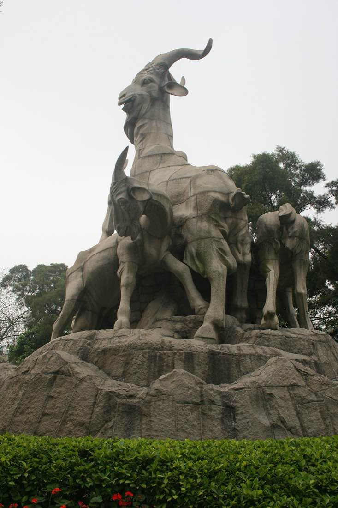
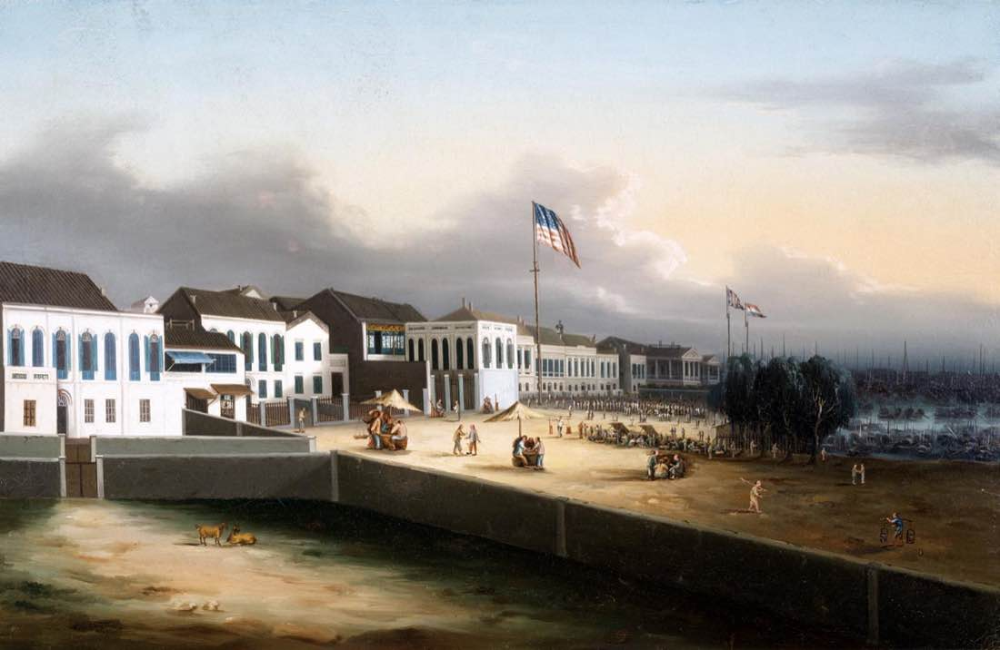

Перед поездкойГуанчжоу за 5 минут 广州
Две тысячи лет через этот порт Китай разговаривал с миром
Перед поездкойГуанчжоу за 5 минут 广州
Две тысячи лет через этот порт Китай разговаривал с миром
Гуанчжоу — столица южной провинции Гуандун, здесь живёт почти 19 миллионов человек. Город стоит в дельте Жемчужной реки, меньше чем в часе езды на скоростном поезде от Гонконга. Две тысячи лет это были главные морские ворота Китая. Здесь китайцы встречали арабов, португальцев, англичан и американцев. Эта глава — короткий урок истории перед прогулками. Прочитайте её в метро или за утренним чаем. Тогда остров Шамянь, храм Чэнь и чайный рынок сложатся в одну историю: о торговле, серебре, опиуме и кухне, которой гордится весь Китай.
Купец, который был богаче всех
В начале девятнадцатого века самым известным китайцем на Западе был не император, а купец из Кантона. Его звали У Бинцзянь, иностранцы называли его Хаоква. Он был старшим в гильдии гунхан. Так называли несколько купеческих домов, которым император разрешил торговать с европейцами. Каждый корабль и каждая партия чая проходили через их руки. Они же отвечали перед властями за поведение иностранцев. Фирма Хаоквы только за 1830 год продала Британской Ост-Индской компании около пятидесяти тысяч ящиков чая. В 1834 году его состояние оценивали примерно в 26 миллионов серебряных долларов. Для сравнения: федеральное правительство США собирало за год меньше. Хаоква давал в долг американским купцам, а через американских партнёров вкладывал серебро в железные дороги США. Конец истории невесёлый. Богатство держалось на монополии, а монополию разрушила Опиумная война. По Нанкинскому договору 1842 года Китай обязался вернуть британцам три миллиона долларов долгов гильдии. Треть этой суммы внёс Хаоква. Он умер в 1843 году. Вместе с ним ушла и эпоха, когда весь западный мир покупал Китай через одну кантонскую набережную.
- Блок первый. Возраст и имена города
Паньюй, Кантон, Город козлов

Пять козлов в парке Юэсю, символ города с 1959 года Город основан в 214 году до нашей эры. Армия первого императора Цинь построила здесь крепость Паньюй. Имя Гуанчжоу появилось в 226 году нашей эры. Европейцы говорили «Кантон»: так португальцы переделали название провинции Гуандун. У города есть и поэтические имена. Янчэн — «Город козлов». По легенде, пятеро бессмертных спустились сюда на пяти козлах с колосьями риса и пообещали, что голода здесь не будет. Бессмертные улетели, а козлы окаменели. Отсюда второе короткое имя, Суй, «колос»: иероглиф 穗 часто встречается в названиях фирм и газет. Каменные козлы стоят в парке Юэсю с 1959 года. Третье имя — Хуачэн, «Город цветов». Здесь субтропики, и что-нибудь цветёт круглый год.
- Блок второй. Морской шёлковый путь
Порт длиной в две тысячи лет
Гуанчжоу торговал по морю уже при династии Хань. В гробнице местного царя второго века до нашей эры нашли серебряную шкатулку персидской работы. При династии Тан в городе жили тысячи арабских и персидских купцов. У них был свой квартал, фаньфан, со своим старостой. Для них построили мечеть Хуайшэн. Её круглый минарет без ярусов высотой около 36 метров называют Гуанта, «Гладкая пагода». По преданию, на нём зажигали огонь, и он служил маяком для кораблей на реке. Отсюда в Юго-Восточную Азию, Индию и Аравию уходили шёлк, фарфор и чай. Обратно везли пряности, благовония и слоновую кость. Мечеть действует до сих пор, она в старом центре, недалеко от улицы Бэйцзинлу.
- Блок третий. Единственный открытый порт
Тринадцать факторий

Набережная факторий с флагами, картина приписывается художнику Ламкуа В 1757 году император Цяньлун закрыл для европейских купцов все порты, кроме Гуанчжоу. До 1842 года почти вся торговля Запада с Китаем шла через одну набережную. Корабли вставали на якорь ниже по реке, у острова Хуанпу, а товары везли в город на лодках. Иностранцам разрешали жить только в тринадцати факториях — домах-конторах у реки, за городской стеной. Входить в город и привозить жён им запрещалось. Торговый сезон длился с осени до весны, на остальное время купцы уезжали в Макао. Сделки шли только через гильдию гунхан. Над факториями висели флаги стран: британский, американский, голландский, шведский. На их месте сегодня Парк культуры, Вэньхуа гунъюань, к востоку от Шамяня.
- Блок четвёртый. Опиум и две войны
Опиумные войны
Британцы покупали в Кантоне чай за серебро. Чтобы вернуть серебро, они стали ввозить опиум из Индии. К 1830-м годам серебро потекло из Китая обратно. В 1839 году император прислал в Кантон комиссара Линь Цзэсюя. Он заставил иностранцев сдать опиум, больше тысячи тонн. С 3 июня 1839 года его три недели уничтожали в Хумэне, в устье реки. Опиум смешивали с солью и известью в траншеях и спускали в море. Началась Первая опиумная война. По Нанкинскому договору 1842 года Китай открыл пять портов и отдал Британии Гонконг. В 1856 году фактории сгорели, и началась Вторая опиумная война. После неё иностранцы получили остров Шамянь, где их дома стоят до сих пор.
- Блок пятый. Город революций
Сунь Ятсен и Вампу

Мемориальный зал Сунь Ятсена, открыт в 1931 году Гуанчжоу далеко от Пекина, и здесь легко начинались восстания. В 1886 году в местной больнице западной медицины учился молодой врач Сунь Ятсен, будущий основатель Китайской Республики. 27 апреля 1911 года его сторонники атаковали резиденцию наместника. Восстание подавили. 72 погибших похоронили на холме Хуанхуаган, а через полгода революция покончила с империей. В двадцатые годы Гуанчжоу стал базой Сунь Ятсена. В 1924 году здесь с советской помощью открыли военную академию Вампу. Главным военным советником был Василий Блюхер, в Китае его знали под именем Галин. После смерти Сунь Ятсена в его честь построили Мемориальный зал с синей черепичной крышей, его открыли в 1931 году.
- Блок шестой. Язык, кухня, ярмарка
Что делает Гуанчжоу кантонским

Жареный гусь — гордость кантонских ресторанов Здесь говорят по-кантонски. Это отдельный язык с шестью основными тонами, и житель Пекина его на слух не понимает. Пригодятся два слова: «м гой» — спасибо за услугу, и «до дзе» — спасибо за подарок. Кантонская кухня ценит свежесть. Рыбу выбирают живой из аквариума, а соус не должен перебивать вкус продукта. Поговорка гласит: «Есть — в Гуанчжоу». Сами кантонцы шутят, что едят всё, у чего четыре ноги, кроме стола. Главные блюда, которые стоит попробовать: жареный гусь, курица на пару, утренний дим-сам и каша чжоу. С весны 1957 года здесь дважды в год, весной и осенью, проходит Кантонская ярмарка, крупнейшая торговая выставка Китая.
Международный день борьбы с наркоманией, 26 июня, выбран в память об уничтожении опиума Линь Цзэсюем в Хумэне в 1839 году.
При системе одного порта англичанин Джеймс Флинт в 1759 году добрался до Тяньцзиня с жалобой императору. Флинта на три года заперли в Макао, а китайца, который помог написать прошение, казнили.
Первая в Китае больница западной медицины открылась в Кантоне в 1835 году. Её основал американский врач-миссионер Питер Паркер.
СоветСохраните офлайн-карту и адрес отеля иероглифами: таксисты редко читают латиницу. Во время Кантонской ярмарки, в апреле и октябре, бронируйте жильё заранее.